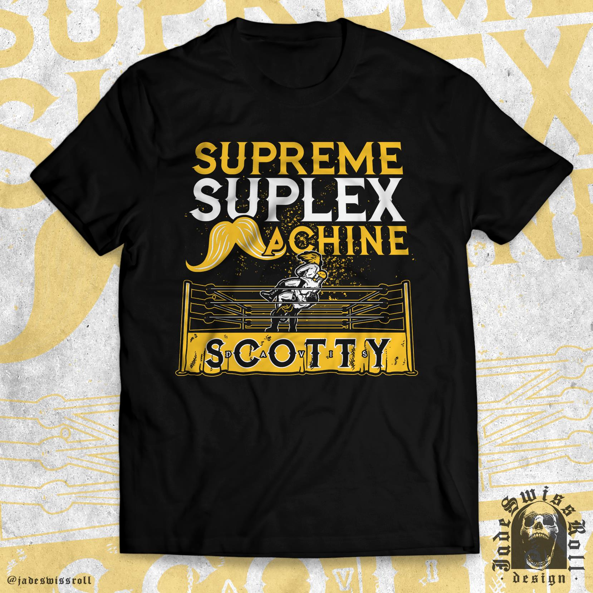
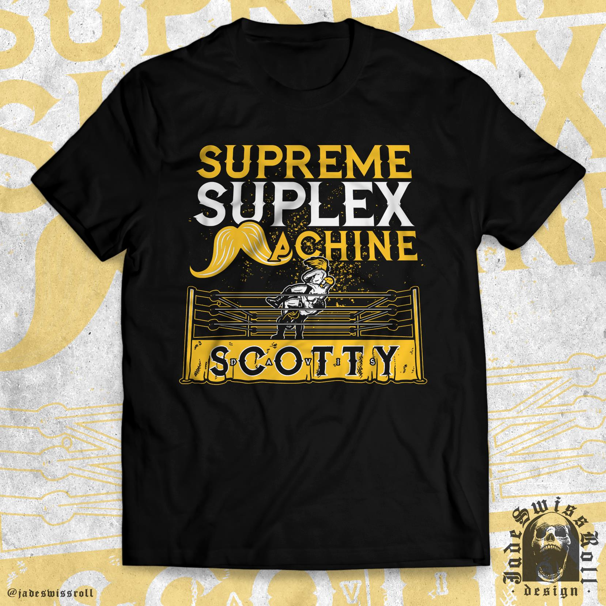

Background
Scotty Davis has a background in Freestyle Wrestling, having started at age 6, being a 7xIrish Champion, a 3xBritish Champion and has won various lower level championships. Davis is the marquee prospect of the Main Stage Wrestling school which has produced stars like Martina, Angel Cruz, and current NLW Champion Terry Thatcher. At Road To Scrappermania 3, Davis debuted for OTT at 16 on March 4th 2017. That match was the first time the OTT fans got to see some of the next generation in action and everyone in the audience was impressed by the youngster. Thanks to this match, the fans got a taste for the new generation of young talents and were ready to see them step up. This is where we got OTT Contenders from, the brand which has been dedicated to building the newest stars of Irish Wrestling.
 
